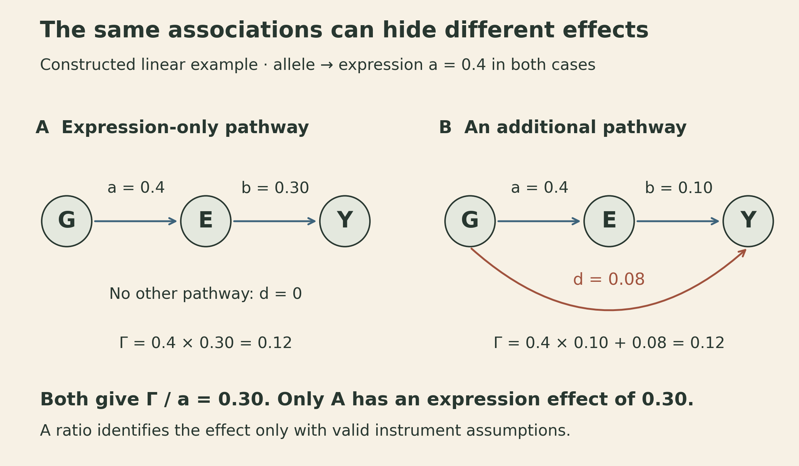
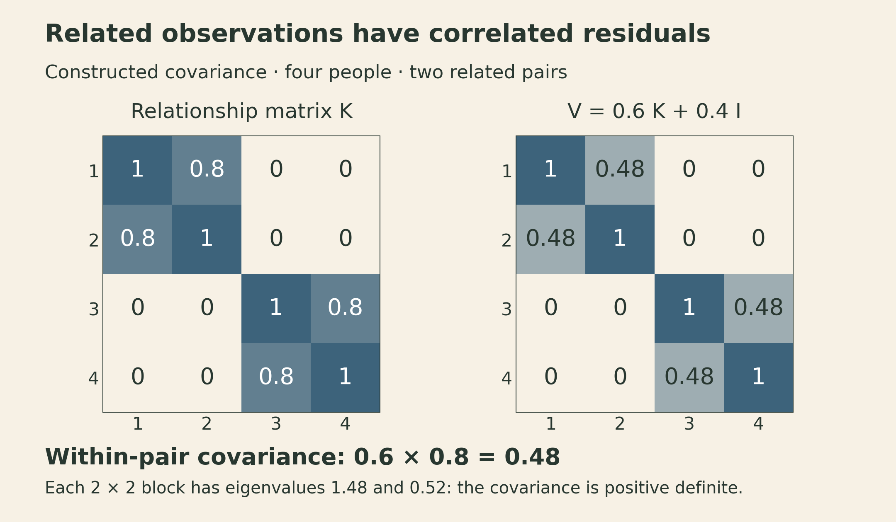
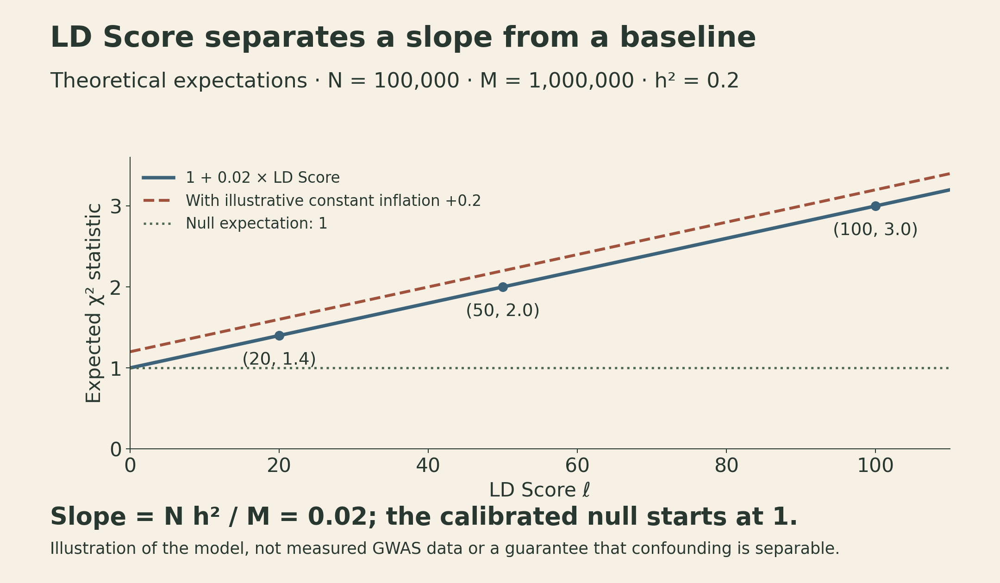

From eQTL Association to Causal Evidence
MIT 6.874 Lecture 13: expression, genetic architecture, and the assumptions behind a mechanism
A variant is associated with gene expression. The same variant is also associated with a disease-related trait. Does changing that gene’s expression change the trait?
Those two associations make the gene interesting. They do not, by themselves, identify the effect of intervening on it. A variant can influence the outcome through another pathway, or two correlated variants can drive the two associations separately.
MIT 6.874’s Spring 2021 Lecture 13 brings these questions together. Manolis Kellis connects GWAS signals to regulatory annotations and expression quantitative trait loci, or eQTLs. The accompanying notes develop mixed models, polygenic prediction, heritability, and LD Score regression. Yongjin Park’s guest lecture then asks what additional assumptions turn observational patterns into causal evidence.
The useful progression is from identifying a relevant cell type, to finding a molecular association, to specifying a causal question that an experiment could answer.
An annotation helps choose where to look
The previous lecture followed a GWAS signal toward candidate variants, genes, and cellular mechanisms. At each stage, correlated variants complicate the interpretation: a lead SNP can tag a causal variant through linkage disequilibrium, or LD, without having a functional effect itself.
Regulatory annotations add biological context. If disease-associated loci overlap active enhancers in a particular cell type more often than an appropriate background does, that cell type becomes a promising place to investigate. The lecture’s immune-cell examples illustrate this use of epigenomic enrichment.
The background matters. Variants differ in allele frequency, LD, and genomic context, and neighboring associated SNPs are not independent discoveries. Counting every correlated hit as separate evidence can exaggerate enrichment. Likewise, failure to detect enrichment in one tissue does not establish that the tissue has no role in the disease.
There are also two different ways to expand a lead signal. An LD neighborhood includes variants correlated with the lead SNP above a chosen threshold. A Bayesian credible set for a single signal contains variants whose posterior probabilities sum to at least a chosen level under a specified fine-mapping model. Multiple-signal models can construct separate sets for different signals. An LD threshold alone does not give a posterior coverage probability.
Functional annotations can inform a prior over candidate variants. They make the prior more biologically informed, but their value still depends on the model and on avoiding circular evaluation. An annotation used to prioritize a result cannot then serve as independent validation of that result.
An eQTL measures a genotype–expression association
For one gene and one candidate variant, a basic model is
\[ E_i=\alpha+\beta_g g_i+\mathbf c_i^\top\boldsymbol\gamma+\varepsilon_i. \]
Here \(E_i\) is an expression measurement for individual \(i\), \(g_i\) is the allele dosage, and \(\mathbf c_i\) contains adjustment variables. Hard-called diploid genotypes use dosages 0, 1, or 2; imputed dosages can be fractional. The coefficient \(\beta_g\) is the conditional expression association per additional copy of the coded allele, on the expression scale used in the model.
The covariates might include batch, ancestry components, and measured biological variables. Expression-derived factors can help account for broad variation, but adjustment is not automatically beneficial: a factor can absorb the biological signal of interest, and conditioning on a collider can create an association. The causal role of a variable matters as well as its ability to explain variance.
A cis-eQTL is usually defined using a local genomic window around the gene. “Cis” in this operational definition does not establish a direct molecular mechanism. Tissue, cell composition, and experimental condition also affect what can be detected.
Two complementary measurements
Total expression asks whether individuals with different genotypes differ in transcript abundance. Allele-specific expression compares reads assigned to the two alleles within a heterozygous individual. The alleles share much of the cellular environment, making this a useful complementary measurement of cis-regulatory effects.
Allelic imbalance still needs technical and biological controls. Reference-mapping bias, copy-number differences, and imprinting can produce imbalance that is not the proposed regulatory mechanism. Connecting imbalance to a candidate cis-regulatory variant generally also needs heterozygosity at that variant and phasing relative to informative transcribed variants. The lecture describes combining total read depth with allele-specific counts, using overdispersed count models rather than treating every read as an independent, equally reliable measurement.
A response eQTL asks whether the genotype association changes with a stimulus. For a binary condition \(s_i\), write
\[ E_i=\alpha+\beta_g g_i+\beta_s s_i+ \beta_{gs}g_i s_i+\mathbf c_i^\top\boldsymbol\gamma+\varepsilon_i. \]
The interaction coefficient \(\beta_{gs}\) tests the difference between genotype effects. A significant eQTL in one condition and a nonsignificant eQTL in the other is not, on its own, a significant interaction. If the same donors appear in both conditions, the analysis must also account for their paired measurements.
Predicted expression can prioritize a gene without proving mediation
Expression is often measured in a smaller reference cohort than the disease phenotype. One strategy learns genetic weights for expression in that reference cohort, predicts the genetically associated component of expression in a larger cohort, and tests its association with the phenotype. This is the central construction of a transcriptome-wide association study, or TWAS.
Combining variants can improve power when no individual SNP tags the relevant expression component well. But an association with predicted expression can also arise from LD or a variant’s effects on other pathways. Gusev et al.’s TWAS paper presents a gene-level association method; assigning a causal mediator requires additional evidence.
This distinction is easiest to see in a small linear example. Let genotype \(G\) influence expression \(E\), which may influence a continuous outcome \(Y\):
\[ E=aG+\varepsilon_E,\qquad Y=bE+dG+\varepsilon_Y. \]
Assume the errors have mean zero conditional on \(G\), and that these equations describe the intervention effects. Substituting the first equation into the second gives a genotype–outcome association
\[ \Gamma=ab+d. \]
If \(a=0.4\) and \(\Gamma=0.12\), a ratio estimate gives \(\Gamma/a=0.3\). That ratio equals the expression effect \(b\) only if the other pathway is absent, so \(d=0\), along with the other instrument assumptions.
Two constructed mechanisms show the problem:
| Mechanism | Expression effect \(b\) | Other pathway \(d\) | Genotype–outcome association \(ab+d\) |
|---|---|---|---|
| Expression mediates the entire genotype effect | 0.30 | 0 | 0.12 |
| Expression mediates part, with another pathway | 0.10 | 0.08 | 0.12 |
Both mechanisms give the same two genotype associations. In the second, the ratio remains 0.30 even though the expression effect is 0.10. These are algebraic examples, not estimates from a biological dataset, and matching these two associations does not mean the full joint distributions are indistinguishable.

This is the exclusion restriction in Mendelian randomization made visible. A genetic instrument needs relevance to the exposure, independence from exposure–outcome confounders, and no outcome pathway that bypasses the exposure. Inherited genotype precedes a later phenotype, but ancestry, selection, and pleiotropy still require attention. Weak instruments make ratio estimates unstable.
The expression and outcome errors may be correlated: a valid instrument can still identify the effect in this linear model when genotype is exogenous to both errors and the exclusion restriction holds. Requiring the two errors to be independent would discard one of the reasons to use an instrument rather than ordinary expression–outcome regression.
Another explanation is that distinct causal variants affect expression and the trait while being correlated through LD. Fine-mapping and colocalization can help distinguish a shared signal from separate signals. Even a shared causal variant does not establish that expression mediates its outcome effect: the second row of the table still remains possible.
Mixed models account for dependence between people
Before interpreting an association, its statistical calibration must be credible. Ordinary regression assumes independent residuals under its usual error model. Related individuals can violate that assumption because their genetic backgrounds are correlated.
A linear mixed model represents this dependence explicitly:
\[ \mathbf y=X\boldsymbol\beta+\mathbf u+\boldsymbol\varepsilon, \qquad \mathbf u\sim\mathcal N(0,\sigma_g^2K), \qquad \boldsymbol\varepsilon\sim\mathcal N(0,\sigma_e^2I_n). \]
For \(n\) individuals, \(\mathbf y\) and \(\mathbf u\) have length \(n\). The \(n\times p\) design matrix \(X\) contains the fixed effects, potentially including the tested SNP and measured covariates. The \(n\times n\) genetic relationship matrix \(K\) describes similarity between individuals. Assuming the two random terms are independent, their covariances add:
\[ V=\operatorname{Cov}(\mathbf y\mid X) =\sigma_g^2K+\sigma_e^2I_n. \]
Given a positive-definite \(V\) and a full-column-rank \(X\), generalized least squares estimates
\[ \widehat{\boldsymbol\beta} =(X^\top V^{-1}X)^{-1}X^\top V^{-1}\mathbf y. \]
Variance components are estimated in practice, often with restricted maximum likelihood. The important change is that two highly correlated residuals no longer count like two independent pieces of evidence.
For a constructed four-person example, suppose \(K\) has unit diagonal, correlation 0.8 within two pairs, and zero between pairs. With \(\sigma_g^2=0.6\) and \(\sigma_e^2=0.4\), \(V\) has unit diagonal and within-pair covariance \(0.48\). Each two-person block has eigenvalues \(1.48\) and \(0.52\), so this covariance is positive definite.

A mixed model is not a universal confounding remover. Its protection depends on the covariance model, the relationship matrix, and the study design. Nor does a well-calibrated association test establish the causal pathway.
Sparse effects and a polygenic background
The notes present a spike-and-slab prior for sparse effects and a Gaussian random effect with kinship covariance for population structure. The prior makes the sparse part explicit: a coefficient is zero with one probability and drawn from a continuous distribution otherwise. When the relationship matrix is built from genotypes, the Gaussian component also has an interpretation as a diffuse polygenic background.
This separates two useful modeling assumptions, but it cannot manufacture information. If two variant columns are identical because of perfect LD, the likelihood cannot tell which one carries the effect without additional assumptions or data. Priors can change how uncertainty is allocated, and posterior inclusion probabilities should be interpreted accordingly.
Exact posterior computation becomes difficult as the number of variants grows. Markov chain Monte Carlo targets a posterior distribution under suitable convergence conditions; variational inference optimizes an approximation. Neither should be described as automatically discovering the true causal variant.
Prediction and heritability answer different questions
A polygenic score adds weighted allele dosages:
\[ \operatorname{PGS}_i=\sum_{j=1}^{M}w_jg_{ij}. \]
LD means correlated variants can carry overlapping information. Clumping, pruning, shrinkage, and LD-aware joint models address this in different ways. Weight estimation, tuning, and evaluation need separate data so that the score’s reported performance is not a consequence of selecting it on the test set.
The score’s units depend on its weights. Log-odds weights do not make the raw sum an absolute disease probability; calibration, baseline risk, and any additional predictors matter. Performance can also change across populations, environments, and measurement settings. A useful predictor need not reveal a manipulable biological mechanism.
Heritability instead concerns variation in a defined population and environment. Narrow-sense heritability is the ratio of additive genetic variance to total phenotypic variance:
\[ h^2=\frac{\operatorname{Var}(A)}{\operatorname{Var}(Y)}. \]
Here \(A\) is the additive genetic value; \(Y\) may also contain nonadditive genetic and environmental components. If we write \(Y=A+\eta\) with \(\operatorname{Cov}(A,\eta)=0\), then the two component variances add. That covariance assumption simplifies the decomposition; it is not part of the definition of the ratio.
Broad-sense heritability includes nonadditive genetic contributions. SNP-based heritability estimates the variation attributed to or tagged by the analyzed variants under its model. These quantities are not interchangeable, and none is the fraction of an individual’s outcome that is “caused by genes.”
For one allele dosage under Hardy–Weinberg equilibrium, the variance is \(2f(1-f)\) at allele frequency \(f\). With correlated variants, however, genetic variance also contains covariance terms. If standardized genotypes have correlation matrix \(R\) and fixed additive effect vector \(\mathbf b\), then
\[ \operatorname{Var}(A)=\mathbf b^\top R\mathbf b. \]
The simpler sum of squared effects requires uncorrelated standardized genotypes, or an appropriate expectation over a random-effects model. Dropping the LD terms without saying why changes the calculation.
This helps explain “missing heritability.” Genome-wide significant hits capture only part of a trait’s genetic signal; many smaller effects may contribute collectively. Rare or poorly tagged variants and differences between study models also matter. A gap between estimates is not a single unexplained biological substance.
LD Score regression uses the amount of tagging
A SNP in strong LD with many other variants has more chances to tag a polygenic signal. Define its LD Score as
\[ \ell_j=\sum_{k=1}^{M}r_{jk}^2. \]
Under a simplified standardized additive random-effects model, the expected association statistic takes the approximate form
\[ \mathbb E[\chi_j^2]\approx 1+\frac{Nh^2_{\mathrm{SNP}}}{M}\ell_j+c. \]
Here \(N\) is sample size, \(M\) is the number of variants in the model, and \(c\) represents a contribution to inflation assumed approximately independent of LD Score. For a fixed study, it collects the term that the original paper writes as sample size times a confounding parameter; it need not stay constant as sample size changes. The 1 is the null baseline for a calibrated one-degree-of-freedom chi-square statistic. The slope reflects polygenic tagging under the model; the intercept is \(1+c\).
For a theoretical example with \(N=100{,}000\), \(M=1{,}000{,}000\), \(h^2_{\mathrm{SNP}}=0.2\), and \(c=0\), the slope is \(0.02\). LD Scores of 20, 50, and 100 give expected statistics of 1.4, 2.0, and 3.0. Individual SNP statistics fluctuate around these expectations. The dashed curve adds an illustrative \(c=0.2\), moving the intercept to 1.2 while keeping the slope fixed.

The LD Score regression paper also discusses where the separation can fail. The effect-size architecture and LD reference matter; misspecification or a relationship between confounding and LD Score can distort the interpretation. The intercept is a model-based diagnostic, not a certificate that every source of bias has been removed.
Partitioned LD Score regression adds annotation-specific LD Scores. In a common formulation, an annotation changes the assumed effect-size variance of variants carrying it. Overlapping annotations therefore have conditional coefficients; those coefficients are not automatically independent percentages of heritability.
This returns to the opening question about cell types. Functional enrichment can guide where experiments are most informative, while genome-wide statistics quantify a distributed genetic signal. The notes’ omnigenic perspective proposes that many peripheral genes can influence core disease processes through regulatory networks. It is a hypothesis about broad biological connectivity, not proof that every associated SNP is causal or that every gene affects every trait.
A causal question needs a defined intervention
Park’s guest lecture separates estimating an effect within an assumed causal structure from discovering the structure itself. Both require more than a good predictive fit.
In a potential-outcomes formulation, let \(W_i\) indicate a well-defined intervention. Individual \(i\) has potential outcomes \(Y_i(1)\) and \(Y_i(0)\), but only one is observed. The average treatment effect is
\[ \operatorname{ATE}=\mathbb E[Y(1)-Y(0)]. \]
Identification from observational data needs assumptions such as consistency, no interference between units, conditional exchangeability given covariates \(C\), and positivity. Exchangeability means \((Y(1),Y(0))\perp W\mid C\); positivity means \(0<P(W=1\mid C)<1\) in the target population. No interference is not the same thing as merely declaring samples IID.
With the true propensity score \(e(C)=P(W=1\mid C)\) and those assumptions, inverse-probability weighting gives
\[ \operatorname{ATE}= \mathbb E\!\left[\frac{WY}{e(C)}- \frac{(1-W)Y}{1-e(C)}\right]. \]
For example, conditioning on \(C\) makes the first term’s expectation \(\mathbb E[Y(1)\mid C]\); averaging over \(C\) recovers its population mean. Extreme propensities produce large weights, and unmeasured confounding remains a problem. These assumptions identify conditional average outcomes and average effects, not an individual’s missing potential outcome. A flexible outcome model can estimate those conditional averages; fitting it does not turn an imputed individual counterfactual into an observation.
Graphs make adjustment choices more explicit. In a simple chain or fork, conditioning on the middle variable blocks that path. In a collider, conditioning on the middle variable can open a path instead. Other open paths may still exist. “Adjust for everything available” is therefore not a causal analysis strategy.
Perturbations ask whether the relationship survives
Observational data can leave several causal graphs compatible with the same distribution. More samples may improve precision without resolving that ambiguity. Perturbing genes changes the information available.
The guest lecture introduces invariant causal prediction: look for relationships whose conditional mechanism remains stable across suitable environments or interventions. If the mechanism generating a target from its causes stays unchanged while other variables are perturbed, that stability can constrain which predictors are its causes. The Peters, Bühlmann, and Meinshausen paper makes the assumptions and identification conditions explicit.
Stability does not guarantee that a finite collection of experiments identifies every parent. Interventions directly changing the target mechanism, hidden variables, insufficiently varied environments, or low power can limit the inference. Perturbation readouts also depend on cell state, timing, dosage, and measurement.
The practical connection is triangulation: combine evidence with different failure modes. An eQTL links genotype to expression. Fine-mapping narrows candidate variants. Colocalization examines shared signals. A mixed model improves association calibration. Perturbation tests a defined intervention in a particular biological setting. Agreement across these steps supports a mechanism more strongly than repeating the same association under slightly different names.
Lecture and further reading
This note follows MIT 6.874, Deep Learning in the Life Sciences, Spring 2021, Lecture 13: eQTLs / GWAS mechanism, by Manolis Kellis with guest lecturer Yongjin Park.
- Official lecture notes, 117 pages: annotations and eQTLs, pp. 9–40; mixed models, pp. 42–59; polygenic scores and heritability, pp. 61–94; LD Score regression and omnigenic models, pp. 96–117.
- Official lecture video: the causal-inference guest lecture begins around 52 minutes.
- Gusev et al., Integrative approaches for large-scale transcriptome-wide association studies, 2016.
- Bulik-Sullivan et al., LD Score regression distinguishes confounding from polygenicity, 2015.
- Peters et al., Causal inference using invariant prediction, journal publication 2016.